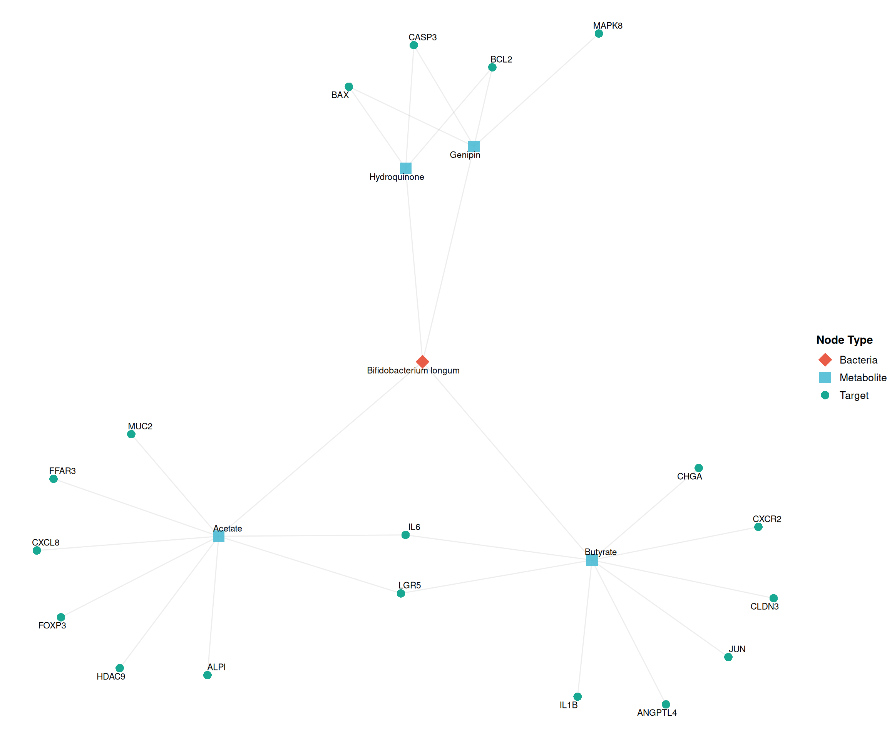
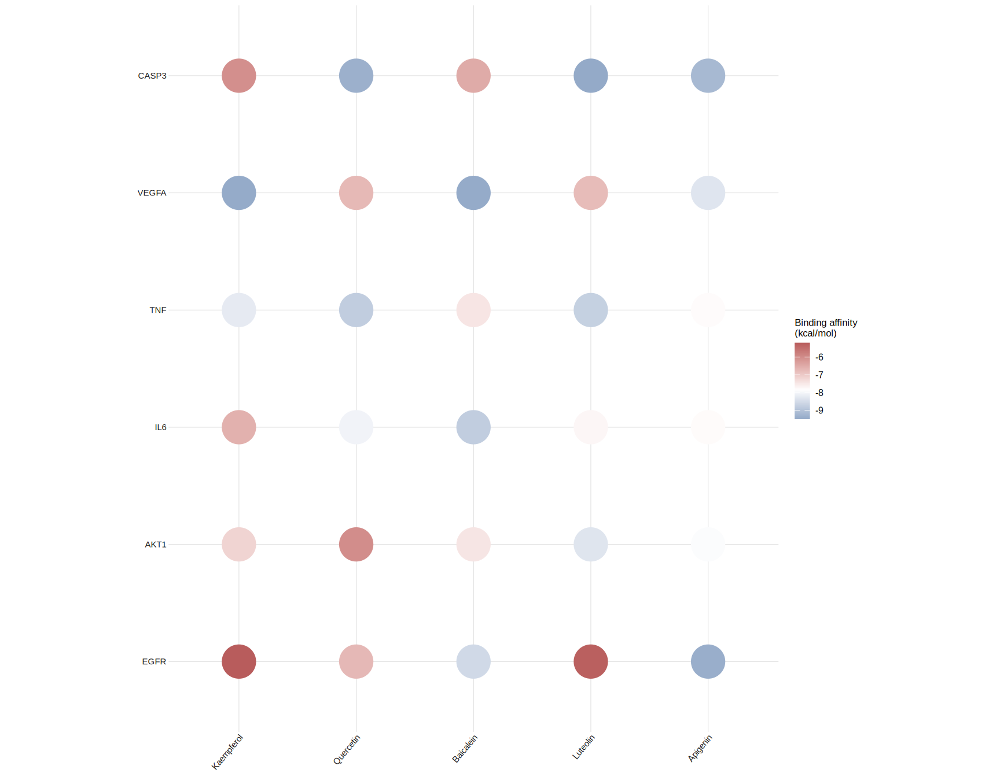
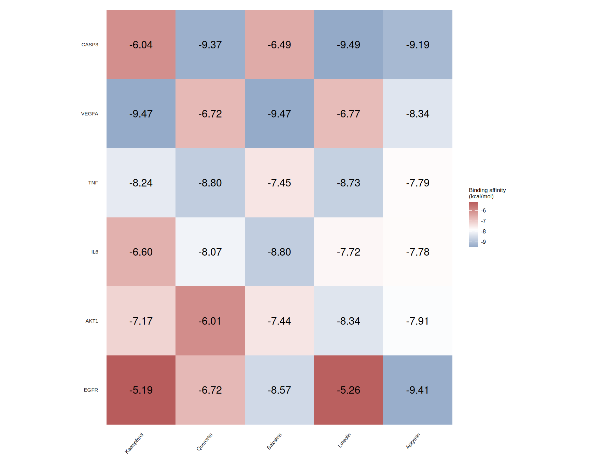

Chapter 10 Other resources
In this chapter, we provide a curated list of additional resources that complement the TCMDATA package for TCM network pharmacology research. These include databases, tools, and R packages that can be integrated into your analysis workflow for enhanced data retrieval, processing, and visualization.
10.1 Additional databases
10.1.1 TF–gene interactions (DoRothEA)
Transcription factors (TFs) are master regulators that control gene expression by binding to specific DNA sequences. In network pharmacology, understanding TF–target relationships is crucial for identifying upstream regulators of disease-associated genes and constructing comprehensive regulatory networks.
TCMDATA provides a curated dataset of high-confidence TF–target interactions derived from the DoRothEA database[1]. The dataset includes interactions at confidence levels A, B, and C for both Human and Mouse:
| Confidence | Evidence Source | Description |
|---|---|---|
| A | Literature-curated | High confidence; manually curated from publications |
| B | ChIP-seq evidence | Moderate confidence; supported by chromatin immunoprecipitation data |
| C | TFBS + ChIP-seq | Medium confidence; predicted binding sites validated by ChIP-seq |
User can access this data via data("tf_targets"):
#> # A tibble: 10 × 5
#> Species TF Target Confidence Mode_of_Regulation
#> <chr> <chr> <chr> <chr> <dbl>
#> 1 Human AHR CYP1A1 C 1
#> 2 Human AHR CYP1A2 C 1
#> 3 Human AHR CYP1B1 C 1
#> 4 Human AHR FOS C 1
#> 5 Human AHR MYC C 1
#> 6 Human AHR UGT1A6 C 1
#> 7 Human AHR ASAP1 C 1
#> 8 Human AHR ERG C 1
#> 9 Human AHR VGLL4 C 1
#> 10 Human AHR ARHGAP15 C 1The Mode_of_Regulation column indicates whether the TF activates (1) or inhibits (-1) the target gene, enabling construction of signed regulatory networks.
10.1.1.1 Application example
This dataset is particularly useful for:
- TF enrichment analysis — Identify which TFs are significantly associated with your disease targets.
- Regulatory network construction — Build TF → target → disease networks to reveal upstream regulatory mechanisms.
- Integration with TCM networks — Link TCM targets to their upstream TFs, extending the herb → molecule → target → TF cascade.
10.1.2 Gut microbiota–host interactions (GutMGene)
The gut microbiome plays a critical role in human health by producing metabolites that modulate host physiology. These microbial metabolites, which are similar to TCM active compounds, are small molecules that interact with host target proteins. This “Gut Microbiota → Metabolite → Host Target” axis provides a natural extension to the classical TCM network pharmacology paradigm, enabling researchers to explore how gut microbiota may mediate or modulate the therapeutic effects of herbal medicines.
TCMDATA integrates comprehensive gut microbiota–metabolite–target interaction data from the GutMGene v2.0 database[2]. The dataset covers both Human and Mouse and includes:
- Bacteria–Metabolite relationships: Which gut bacteria produce specific metabolites
- Metabolite–Target relationships: Which host genes are regulated by microbial metabolites
- Interaction type: Whether the metabolite activates or inhibits the target
#> Bacteria Bacteria_ID Metabolite Metabolite_ID Target Target_ID
#> 1 Christensenella minuta 626937 Acetate 175 FFAR3 2865
#> 2 Christensenella minuta 626937 Acetate 175 FFAR2 2867
#> 3 Christensenella minuta 626937 Acetate 175 CCL2 6347
#> 4 Christensenella minuta 626937 Acetate 175 LGR5 8549
#> 5 Christensenella minuta 626937 Acetate 175 ALPI 248
#> 6 Christensenella minuta 626937 Acetate 175 MUC2 4583
#> 7 Christensenella minuta 626937 Acetate 175 DCLK1 9201
#> 8 Christensenella minuta 626937 Acetate 175 OCLN 100506658
#> 9 Christensenella minuta 626937 Acetate 175 CLDN3 1365
#> 10 Christensenella minuta 626937 Acetate 175 TJP1 7082
#> Interaction PMID_Bac_Met PMID_Met_Target
#> 1 activation 21357455 28322790
#> 2 activation 21357455 28322790
#> 3 inhibition 21357455 28322790
#> 4 activation 21357455 32240190
#> 5 activation 21357455 32240190
#> 6 activation 21357455 32240190
#> 7 activation 21357455 32240190
#> 8 activation 21357455 32240190
#> 9 activation 21357455 32240190
#> 10 activation 21357455 32240190data("gutMGene") loads a list with two data frames: gut_axis_human and gut_axis_mouse.
10.1.2.1 Application example: Gut–TCM integration
Since microbial metabolites and TCM active compounds are both small molecules targeting host proteins, you can integrate GutMGene with TCM network analysis to explore:
- Shared targets — Do TCM compounds and gut metabolites regulate the same host genes?
- Synergistic effects — Can TCM herbs modulate gut microbiota composition, thereby influencing metabolite production?
- Multi-layer networks — Construct Bacteria → Metabolite → Target → Pathway networks analogous to Herb → Molecule → Target → Pathway networks.
10.1.2.2 Network visualization with ggtangle
The tripartite structure of gut microbiota data (Bacteria → Metabolite → Target) mirrors the TCM network paradigm (Herb → Molecule → Target). Below we demonstrate how to visualize this relationship using ggtangle:
library(TCMDATA)
library(dplyr)
library(igraph)
library(ggtangle)
library(ggplot2)
library(ggrepel)
data("gutMGene")
# Select one bacterium with multiple metabolites and targets
bac_name <- "Bifidobacterium longum"
gut_sub <- gutMGene$gut_axis_human |>
filter(Bacteria == bac_name, !is.na(Metabolite), !is.na(Target))
# Sample targets to keep the network readable
set.seed(2026)
gut_sub <- gut_sub |>
group_by(Metabolite) |>
slice_sample(n = 8) |>
ungroup()
# Build edges: Bacteria → Metabolite → Target
edges <- bind_rows(
gut_sub |> distinct(from = Bacteria, to = Metabolite),
gut_sub |> distinct(from = Metabolite, to = Target)
)
# Node attributes
nodes <- tibble(name = unique(c(edges$from, edges$to))) |>
mutate(type = case_when(
name == bac_name ~ "Bacteria",
name %in% gut_sub$Metabolite ~ "Metabolite",
TRUE ~ "Target"
))
# Build and plot network
g <- graph_from_data_frame(edges, directed = FALSE, vertices = nodes)
set.seed(2026)
ggplot(g, layout = "fr") +
geom_edge(alpha = 0.15, color = "grey55") +
geom_point(aes(color = type, shape = type, size = type), alpha = 0.9) +
geom_text_repel(
aes(label = name),
size = 3, max.overlaps = 30, segment.alpha = 0.3
) +
scale_color_manual(
values = c("Bacteria" = "#E64B35", "Metabolite" = "#4DBBD5", "Target" = "#00A087"),
name = "Node Type"
) +
scale_shape_manual(
values = c("Bacteria" = 18, "Metabolite" = 15, "Target" = 16),
name = "Node Type"
) +
scale_size_manual(
values = c("Bacteria" = 6, "Metabolite" = 5, "Target" = 3.5),
name = "Node Type"
) +
theme_void() +
theme(
legend.position = "right",
legend.title = element_text(face = "bold", size = 11),
legend.text = element_text(size = 10)
)
The network reveals the multi-target nature of gut microbial metabolites—analogous to TCM active compounds—where a single metabolite (e.g., Acetate, Butyrate) can modulate multiple host genes through distinct signaling pathways.
10.2 Additional visualization
10.2.1 Heatmap for molecular docking results
Molecular docking is a key computational method in network pharmacology for validating interactions between TCM active compounds and target proteins. After performing docking simulations (e.g., with AutoDock Vina), users typically obtain a matrix of binding affinities (kcal/mol) where more negative values indicate stronger binding.
TCMDATA provides ggdock() for visualizing docking results as heatmaps. The function supports both dot plots and tile plots, with flexible color palettes and optional affinity labels.
library(TCMDATA)
# Generate demo docking data
set.seed(2026)
molecules <- c("Quercetin", "Kaempferol", "Luteolin", "Apigenin", "Baicalein")
targets <- c("AKT1", "EGFR", "TNF", "IL6", "VEGFA", "CASP3")
dock_matrix <- matrix(
runif(length(molecules) * length(targets), min = -9.5, max = -4.5),
nrow = length(targets),
dimnames = list(targets, molecules)
)
# Dot plot
ggdock(dock_matrix, order = "median", type = "dot", point_size = 10)
Also, you can try tile plot with affinity labels:

10.3 References
Garcia-Alonso L, Holland CH, Ibrahim MM, Turei D, Saez-Rodriguez J. Benchmark and integration of resources for the estimation of human transcription factor activities. Genome Research (2019), 29(8), 1363–1375. doi: 10.1101/gr.240663.118.
Qi C, He G, Qian K, et al. GutMGene v2.0: an updated comprehensive database for target genes of gut microbes and microbial metabolites. Nucleic Acids Research (2025), 53(D1), D783–D788. doi: 10.1093/nar/gkae1002.
10.4 Session information
#> R version 4.6.0 (2026-04-24)
#> Platform: x86_64-pc-linux-gnu
#> Running under: Ubuntu 24.04.4 LTS
#>
#> Matrix products: default
#> BLAS: /usr/lib/x86_64-linux-gnu/openblas-pthread/libblas.so.3
#> LAPACK: /usr/lib/x86_64-linux-gnu/openblas-pthread/libopenblasp-r0.3.26.so; LAPACK version 3.12.0
#>
#> locale:
#> [1] LC_CTYPE=en_US.UTF-8 LC_NUMERIC=C
#> [3] LC_TIME=en_US.UTF-8 LC_COLLATE=en_US.UTF-8
#> [5] LC_MONETARY=en_US.UTF-8 LC_MESSAGES=en_US.UTF-8
#> [7] LC_PAPER=en_US.UTF-8 LC_NAME=C
#> [9] LC_ADDRESS=C LC_TELEPHONE=C
#> [11] LC_MEASUREMENT=en_US.UTF-8 LC_IDENTIFICATION=C
#>
#> time zone: UTC
#> tzcode source: system (glibc)
#>
#> attached base packages:
#> [1] stats4 stats graphics grDevices utils datasets methods
#> [8] base
#>
#> other attached packages:
#> [1] caret_7.0-1 lattice_0.22-9 org.Hs.eg.db_3.23.1
#> [4] AnnotationDbi_1.74.0 IRanges_2.46.0 S4Vectors_0.50.1
#> [7] Biobase_2.72.0 BiocGenerics_0.58.1 generics_0.1.4
#> [10] clusterProfiler_4.20.0 aplot_0.2.9 ggrepel_0.9.8
#> [13] ggtangle_0.1.2 igraph_2.3.1 ggplot2_4.0.3
#> [16] dplyr_1.2.1 ivolcano_0.0.5 enrichplot_1.32.0
#> [19] TCMDATA_0.1.0
#>
#> loaded via a namespace (and not attached):
#> [1] splines_4.6.0 ggplotify_0.1.3 tibble_3.3.1
#> [4] polyclip_1.10-7 hardhat_1.4.3 enrichit_0.1.4
#> [7] pROC_1.19.0.1 rpart_4.1.27 lifecycle_1.0.5
#> [10] httr2_1.2.2 doParallel_1.0.17 globals_0.19.1
#> [13] processx_3.9.0 MASS_7.3-65 magrittr_2.0.5
#> [16] sass_0.4.10 rmarkdown_2.31 jquerylib_0.1.4
#> [19] yaml_2.3.12 ggvenn_0.1.19 DBI_1.3.0
#> [22] RColorBrewer_1.1-3 lubridate_1.9.5 purrr_1.2.2
#> [25] yulab.utils_0.2.4 nnet_7.3-20 tweenr_2.0.3
#> [28] rappdirs_0.3.4 ipred_0.9-15 aisdk_1.4.8
#> [31] gdtools_0.5.1 circlize_0.4.18 lava_1.9.1
#> [34] listenv_0.10.1 tidytree_0.4.7 fru_0.0.7
#> [37] parallelly_1.47.0 codetools_0.2-20 DOSE_4.6.0
#> [40] ggforce_0.5.0 tidyselect_1.2.1 shape_1.4.6.1
#> [43] farver_2.1.2 matrixStats_1.5.0 Seqinfo_1.2.0
#> [46] jsonlite_2.0.0 GetoptLong_1.1.1 e1071_1.7-17
#> [49] ggridges_0.5.7 ggalluvial_0.12.6 survival_3.8-6
#> [52] iterators_1.0.14 systemfonts_1.3.2 foreach_1.5.2
#> [55] tools_4.6.0 ggnewscale_0.5.2 treeio_1.36.1
#> [58] Rcpp_1.1.1-1.1 glue_1.8.1 prodlim_2026.03.11
#> [61] gridExtra_2.3 xfun_0.57 qvalue_2.44.0
#> [64] withr_3.0.2 fastmap_1.2.0 callr_3.7.6
#> [67] digest_0.6.39 timechange_0.4.0 R6_2.6.1
#> [70] gridGraphics_0.5-1 colorspace_2.1-2 GO.db_3.23.1
#> [73] RSQLite_3.53.1 utf8_1.2.6 tidyr_1.3.2
#> [76] fontLiberation_0.1.0 data.table_1.18.4 recipes_1.3.2
#> [79] class_7.3-23 httr_1.4.8 htmlwidgets_1.6.4
#> [82] scatterpie_0.2.6 ModelMetrics_1.2.2.2 pkgconfig_2.0.3
#> [85] gtable_0.3.6 timeDate_4052.112 blob_1.3.0
#> [88] ComplexHeatmap_2.28.0 S7_0.2.2 XVector_0.52.0
#> [91] htmltools_0.5.9 fontBitstreamVera_0.1.1 bookdown_0.46
#> [94] clue_0.3-68 scales_1.4.0 png_0.1-9
#> [97] gower_1.0.2 Boruta_10.0.0 ggfun_0.2.0
#> [100] knitr_1.51 rstudioapi_0.18.0 reshape2_1.4.5
#> [103] rjson_0.2.23 nlme_3.1-169 proxy_0.4-29
#> [106] cachem_1.1.0 GlobalOptions_0.1.4 stringr_1.6.0
#> [109] parallel_4.6.0 pillar_1.11.1 grid_4.6.0
#> [112] vctrs_0.7.3 randomForest_4.7-1.2 tidydr_0.0.6
#> [115] cluster_2.1.8.2 evaluate_1.0.5 cli_3.6.6
#> [118] compiler_4.6.0 rlang_1.2.0 crayon_1.5.3
#> [121] future.apply_1.20.2 labeling_0.4.3 ps_1.9.3
#> [124] forcats_1.0.1 plyr_1.8.9 fs_2.1.0
#> [127] ggiraph_0.9.6 stringi_1.8.7 viridisLite_0.4.3
#> [130] Biostrings_2.80.1 lazyeval_0.2.3 glmnet_5.0
#> [133] GOSemSim_2.38.0 fontquiver_0.2.1 Matrix_1.7-5
#> [136] patchwork_1.3.2 bit64_4.8.2 future_1.70.0
#> [139] KEGGREST_1.52.0 kernlab_0.9-33 memoise_2.0.1
#> [142] bslib_0.11.0 ggtree_4.2.0 bit_4.6.0
#> [145] xgboost_3.2.1.1 ape_5.8-1 gson_0.1.0